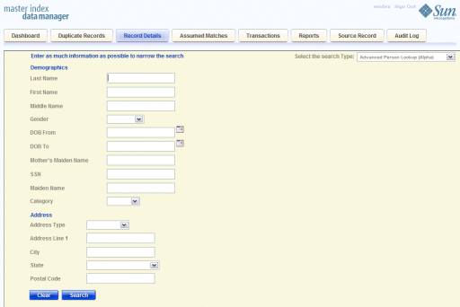
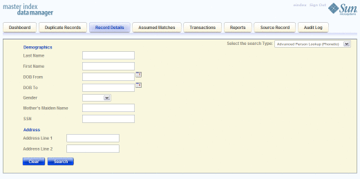
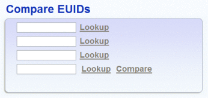
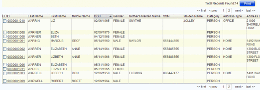
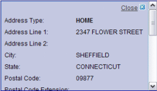
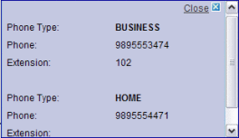

Searching for Object Profiles on the MIDM
The following topics provide step-by-step instructions to help you perform the various types of searches for object profiles available on the MIDM. To move from one field to another on the search pages without using the mouse, press the Tab key.
Performing an EUID Lookup
To search for an object profile using only an object’s EUID, you need to enter the EUID number in the EUID Search section, either on the Dashboard or on the Record Details page. This type of search should result in only one matching profile.
Note - The following procedure is for performing the lookup from the Record Details page. For instructions on performing the lookup from the Dashboard, see Performing a Quick Search (EUID Lookup).
Figure 8 Simple Lookup Page

To Perform an EUID Lookup
- On the Record Details page, select Basic app_name Lookup from the Search Types drop-down list (where app_name is the name of the master index application) .
- In the EUID section, enter the object’s EUID.
- Click Search to initiate the search.
The Record Details page appears in view mode, displaying detailed information about the object whose EUID you entered.
Performing a Local ID Lookup
To search for an object profile by its local ID in a specific system, you need to enter search criteria in the Local ID section of the Lookup page. This type of search should result in only one matching profile. If the Local ID field contains alphabetic characters, the criterion is case-sensitive.
Note - The name of this section might have been modified for your implementation. See your system administrator for more information.
Figure 9 Simple Lookup Page
To Perform a Local ID Lookup
- On the Record Details page, select Basic app_name Lookup from the Search Types drop-down list (where app_name is the name of the master index application).
- In the System field, select the source system, such as a registration system, for which the object’s local ID is known.
- In the Local ID field, enter the object’s unique identification code for the
specified system.
Note - If alphabetic characters are entered in this field, the search is case-sensitive. This field name might have been modified for your implementation.
- Click Search to initiate the search.
The Search Result page is bypassed, and the Record Details page appears in view mode.
Performing an Alphanumeric Search
To perform an alphanumeric search for an object profile, you need to specify identifying information for the object on the Alphanumeric Search page. This type of search might result in several matching profiles.
Note - Make your search as specific as possible. This type of search does allow wildcard characters; use a percent sign (%) to indicate unknown characters. Any required fields are marked with an asterisk (*). If at least one field in group of fields is required, the fields in that group are marked with a dagger (†). In addition, range searching is supported for any field type that has two fields, one with “From” appended to the name and one with “To” appended to the name (for example, “DOB From” and “DOB To”). If your MIDM is set up for range searching, see the system administrator for more information about how it is configured.
Figure 10 Alphanumeric Search Page
To Perform an Alphanumeric Search
- On the Record Details page, select Advanced app_name Lookup (Alpha) from the Search Type drop-down list (where app_name is the name of the master index application).
- Enter the search criteria for the object you want to find.
- Click Search to initiate the search.
The search results list appears with a list of matching profiles. If only one matching profile is returned, the Record Details page appears in view mode.
Note - The system administrator can choose whether to display certain transaction–based fields on this page, such as the EUID field, the local ID and system fields, or the create date field. Any values entered into these optional fields take precedence over information entered into other search fields. For example, if an invalid EUID is entered but valid first and last names are entered, no results are returned due to the invalid EUID. The EUID field takes precedence over the local ID and system fields.
Performing a Phonetic Search
To perform a phonetic search for an object profile, you need to specify identifying information for the object in the phonetic search fields. Only specific combinations of fields are used for queries. This search might return several profiles.
Figure 11 Phonetic Search
To Perform a Phonetic Search
- On the Record Details page, select Advanced app_name Lookup (Phonetic) from the Search Type drop-down list (where app_name is the name of the master index application).
- Enter the search criteria for the object you want to find.
Note - Certain combinations of data might be required to perform a phonetic search. See your system administrator for more information. For more information about phonetic searches, see Advanced Phonetic Lookup.
- Click Search to initiate the search.
The search results list appears with a list of matching profiles. If only one matching profile is found, the results list is bypassed and the Record Details page appears in view mode.
Note - The system administrator can choose whether to display the EUID field or the local ID and system fields on this page. Any values entered into these optional fields take precedence over information entered into other search fields. For example, if an invalid EUID is entered but valid first and last names are entered, no results are returned due to the invalid EUID. The EUID field takes precedence over the local ID and system fields.
Performing an EUID Comparison Lookup
You can perform a search by EUID for multiple profiles from the Dashboard. You can enter from one to four EUIDs in the Compare EUIDs section. The resulting profiles appear in a side-by-side display on the Record Details and you can compare record information.
Figure 12 EUID Comparison Lookup
To Perform an EUID Comparison Lookup
- In the tabbed headings, click Dashboard.
- In the Compare EUIDs box, enter at least two, and up to four, EUIDs.
- Do one of the following:
- To view information about one of the EUIDs, click Lookup next to that
EUID.
The Record Details page shows with the matching profile displayed.
- To compare all entered EUIDs, click Compare.
The Record Details page appears with each matching profile displayed side-by-side.
- To view information about one of the EUIDs, click Lookup next to that
EUID.
Working with Search Results on the MIDM
The following topics describe the search results list for searches performed from most MIDM pages, how to sort and select the profiles that match the searches you perform, and how to print a search result report. The results list appears below the search criteria, and the number of records returned for the search appear above the results list.
Viewing the Results of a Search
The matching profiles that result from an object search appear in table format below the search criteria. The table displays a limited number of fields contained in the SBR of the object profile.
Figure 13 Search Results List
To View the Results of a Search
- Using one of the searches described in Searching for Object Profiles on the MIDM, perform a search for the
object whose profile you want to access.
If more than one record matches the criteria, the search results list appears below the criteria.
- In the results list, view the information presented for each returned profile to determine which profile you want to view.
- You can click the ellipsis to view additional address or telephone information for
a profile, as shown in the following figures.
Figure 14 Address Information Popup
Figure 15 Telephone Information Popup
 - When you are finished viewing the additional address or telephone information, click Close.
- To navigate through the results list pages, do any of the following:
- To view the following page of search results, click next>.
- To return to the previous page of results, click <prev.
- To view the first page of search results, click <<first.
- To view the last page of search results, click last>>.
- To select a profile to display on the Record Details page in view mode, click the EUID of that profile or select the check box next to the EUID and click Compare.
- To select multiple profiles to compare on the Record Details page, select the
check boxes next to the EUIDs you want to compare, and then
click Compare.
Note - You can select from one to four EUIDs to view on the Records Details page.
- To perform a new search, click Clear in the search criteria section of the page.
- To print the results in a report, click Print.
Sorting the Results of Your Search
By default, the results of a search are sorted by EUID, but you can sort the results by any column in the search results list table.
To Sort the Profiles on the Search Result Page
- Using one of the searches described in Searching for Object Profiles on the MIDM, perform a search for the object whose profile you want to access.
- In the results list that appears, click the column heading of the column
by which you want to sort the results.
Note - Clicking a heading once sorts the profiles in ascending order; clicking the heading a second time sorts the profiles in descending order.